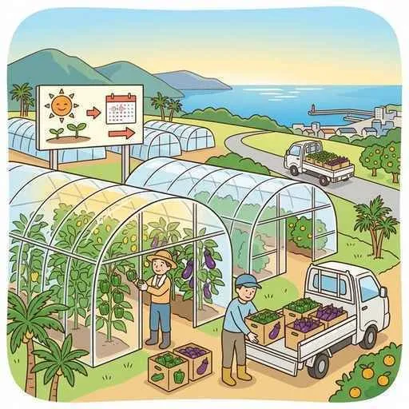
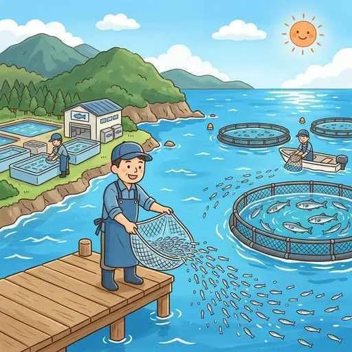
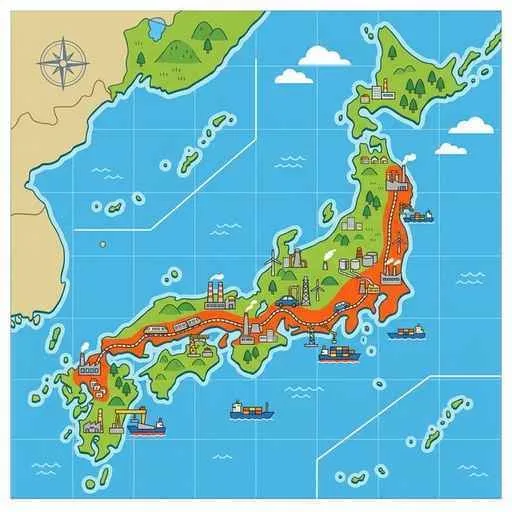

2. 日本の資源・産業・都市
日本は、工業原料やエネルギー資源の多くを海外からの輸入に依存しつつ、高度な技術で独自の発展を遂げてきました。今回は、日本の資源事情、都市構造の変遷（ドーナツ化現象など）、多様な工夫が光る農業や漁業、そして世界に誇る太平洋ベルトの工業について詳しく解説します！
1. 日本の資源とエネルギー事情
日本は、石炭（かつては「黒いダイヤ」として主力だった資源）や原油などのエネルギー資源、鉄の原料である鉄鉱石、アルミニウムの原料であるボーキサイトのほぼ全量を海外（オーストラリア等）から輸入しています。
- LNG（液化天然ガス）：天然ガスを零下162度まで冷却して液体にした資源。クリーンなエネルギーとして発電などに多く使われます。
- レアメタル（希少金属）：ハイテク製品に欠かせない希少な金属。
- エネルギーミックスと環境問題：発電方法の構成割合をエネルギーミックスと呼びます。火力発電などによる二酸化炭素（CO2）の排出が地球温暖化の原因となるため、太陽光、バイオマス（生物資源）発電、マグマの熱を利用する地熱発電などの再生可能エネルギーの導入が進んでいます。
- オゾン層とフロンガス：有害な紫外線を遮るオゾン層を破壊する原因となったフロンガスは、国際的に使用が規制されています。
- その他の環境問題：都市部が郊外より高温になるヒートアイランド現象や、大気汚染物質が雨に溶けて森林を枯らす酸性雨があります。
2. 都市の構造と人口移動の変遷
日本の人口は、大都市や地方の中心地に集まる傾向が強まっています。
- 三大都市圏：東京・大阪・名古屋とその周辺を指し、日本の人口の約半数が集中しています。
- 地方中枢都市（ちほうちゅうすうとし）：札幌市、仙台市、広島市、福岡市の4つの政令指定都市（人口50万人以上で都道府県並みの権限を持つ都市）を指し、各地方の政治・経済の拠点となっています。
- ドーナツ化現象と都心回帰：地価の高騰などにより、都心の人口が減少し、郊外のベッドタウン（衛星都市）の人口が増加する現象をドーナツ化現象と呼びます。しかし近年は、再開発やタワーマンションの建設などにより、再び都心部へ人口が戻る都心回帰（としんかいき）が進んでいます。
- 過密と過疎：都市部の過密（渋滞やゴミ問題など）に対し、農山村部では過疎（防災や地域社会の維持困難）が深刻な課題です。1947〜1949年の第一次ベビーブーム時の世代が高齢化し、少子高齢化を加速させています。
3. 多様化する日本の「農業と漁業」の工夫
日本の農業や漁業は、狭い国土や厳しい気候条件を克服するために、様々な工夫を凝らしています。

図3：ビニールハウスなどの施設を使い、温暖な気候で成長を早めて出荷する「促成栽培」
① 農業の工夫
- 近郊農業（きんこうのうぎょう）：大都市の周辺で行われ、キャベツなどの野菜を新鮮なうちに素早く出荷する農業。
- 促成栽培（そくせいさいばい）：高知平野や宮崎平野などの温暖な気候を利用し、ビニールハウス（施設園芸）で栽培して、出荷時期を通常より早める方法。
- 抑制栽培（よくせいさいばい）：長野県や群馬県の涼しい高冷地を利用し、出荷時期を通常より遅らせて、夏場に出荷する方法。
- 兼業農家の増加：日本の農家の多くは、農業以外の収入が多い「第二種兼業農家」です。また、安全志向から農薬を使わない有機栽培（オーガニック）も注目されています。米の消費減に伴い、作付けを制限する減反政策（生産調整）も行われました。

図4：稚魚まで育てて自然の海へ放流し、大きくなってからとる「栽培漁業（育てる漁業）」
② 漁業・林業の工夫
- 栽培漁業（育てる漁業）：人工的に卵から稚魚まで育てて一度自然の海へ放流し、大きくなってから漁獲する方法。
- 養殖漁業：いけす等で成魚になるまで人工的に管理して育てる方法。
- 日本の林業：国土の約3分の2が森林です。青森県の「青森ひば」などの美しい天然林・木材資源があります。
4. 太平洋ベルトと主要な工業地域
日本の工業出荷額の大部分は、関東から九州にかけて連なる工業の帯「太平洋ベルト」に集中しています。

図5：日本の主要な工業地帯が並ぶ「太平洋ベルト」
- 中京工業地帯（出荷額日本一）：愛知・三重・岐阜に広がり、世界的な自動車工業が非常に盛んです。
- 京浜工業地帯：東京・神奈川を中心に、印刷業や機械工業などが発達した日本最大級の工業地帯です。
- 阪神工業地帯：大阪・兵庫を中心とし、中小企業の高度な技術力を活かした多種多様な工業が特徴。大阪湾岸は液晶工場などが並ぶ「パネルベイ」とも呼ばれました。
- その他の地域：
- 京葉工業地域（千葉）：製鉄所や石油化学コンビナートが並びます。
- 北関東工業地域（内陸）：高速道路網を活かした内陸型工業。
- 瀬戸内工業地域（岡山・山口等）：倉敷市水島地区などのコンビナートが発展しています。
- 産業の空洞化（くうどうか）：安価な労働力を求めて工場が海外へ移転したため、国内の産業や雇用が衰退する現象が問題となっています。
5. 貿易と交通・第3次産業
日本は、原材料を輸入して国内で高度な製品に加工して輸出する「加工貿易」で栄えてきました。
- 輸送の使い分け：IC（集積回路）などの軽量で高価なハイテク製品は航空輸送（成田空港や羽田空港などのハブ空港を利用）で行われ、石油や鉄鉱石などの重くて大量の資源は海上輸送（船舶）が使われます。
- 高速交通網：1964年の東京オリンピック時に開業した東海道新幹線などにより、移動に必要な時間が短縮され、「時間距離（じかんきょり）」が大きく縮まりました。
- 産業のサービス化：現在、日本の働く人の約7割は、商業や情報通信業などの「第3次産業」に従事しています。
🔥 定期テスト対策・暗記のコツ
① 促成栽培と抑制栽培の違い（超重要！）
「促成栽培＝出荷時期を早める（宮崎・高知など暖かい平野）」「抑制栽培＝出荷時期を遅らせる（長野・群馬など涼しい高冷地）」という対比とそれぞれの代表的な産地は、テストでほぼ毎回出題されます！記述問題でも「なぜその時期に作るのか？」➔「他の産地と出荷時期をずらすことで、高い価格で販売するため」と答えられるようにしましょう。
② 栽培漁業と養殖漁業の違い
「卵から稚魚まで育てて、海へ放流してから捕る ➔ 栽培漁業」「成魚になるまでずっと人間が育てる ➔ 養殖漁業」の決定的な違い（放流するかしないか）を明確にしておきましょう！
③ 三大工業地帯と地方中枢都市
「出荷額日本一＝中京工業地帯（自動車）」「四大地方中枢都市＝札幌・仙台・広島・福岡」を正確に書けるようにしておいてください！